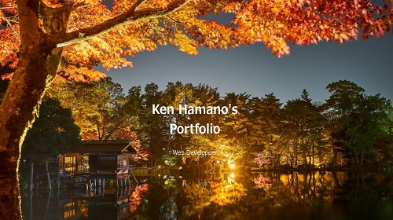

Ken Hamano's
Portfolio
Web Developper
About
濱野 健太郎
KENTARO HAMANO
- 職業：野良のリーダーエンジニア、フリーランス
- 生年月日：1988年4月23日(32歳)
- 好きな食べ物：うな重、エイヒレ
- 趣味：人生相談、勉強
Features
インフラ運用・構築
-
インフラエンジニアとして運用・構築経験があります。
主な業種としては、金融、キャリア、官公庁です。
PM/TL
-
新規・更改・保守案件等でインフラをメインに
プロジェクトマネージャ/チームリーダを担当しております。
工程としては要件定義～運用までとなります。
RPA
-
運用・保守/開発の現場で業務効率化に必要な
自動化ツールを作成しております。
主な言語は、ExcelVBAです。
サーバ構築でPuppet/Chef実装経験あります。
Skills
HTML
30
ギャグセンス
20
CSS
30
アルコール耐性
5
LiveScript
10
ブラックジョーク
90
Linux
70
ExcelVBA
80
Career
少年時代
図書館で本を読みふける幼少期を過ごす。 考えてみればここからすでにぼっちだった。高校時代
漫画「ヒカルの碁」を読んで囲碁を勉強する 文化祭で遊びに行った囲碁部に誘われて 地方予選に参加3年生の時に全国大会出場
新卒時代
40人のベンチャー企業でインフラエンジニアとして社畜生活オフィスチェアでの仮眠スキルを身に着ける。
現在の活動
フリーランスのインフラエンジニア直近はリーダーとして活躍
UTAGE運営
Creative
過去に作成したホームページを掲載しています。

ポートフォリオサイト
サイトの概要
-
製作途中ですが、いいものが出来ればと思っています。
はじめてのポートフォリオサイトです！